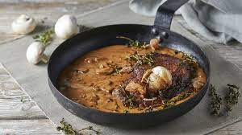

Steak Diane

Description
This steak Diane recipe is a true retro classic, but certainly shouldn't be confined to the annuls of history. This simple pan sauce can be whipped up in no time, comprised of mushrooms, cognac, cream and a host of tasty seasonings.
Ingredients
- 4 fillet steaks
- 1 banana shallot, finely diced
- 1 garlic clove, sliced
- 80g of button mushrooms, sliced
- 1 knob of butter
- 100ml of cognac
- 1 tsp Worcestershire sauce
- 1 tsp Dijon mustard
- 150ml of double cream
- 1 handful of parsley leaves, finely chopped
- olive oil
- salt
- freshly ground black pepper